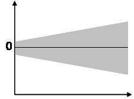

10.4 Linear Regression (OLS)
This section discussed Ordinary Least Square Linear Regression, this includes single and multiple variable OLS Linear Regression.
There are other types of linear regression, which are not covered.
- General Linear Regression
- Generalized Linear Regression
- Hierachical Linear Regression
- Erros-in-variable Linear Regression
- Others
10.4.1 The Concept
Linear Regression establishes a relationship between dependent variable (Y) and one or more independent variables (X) using a best fit straight line (also known as regression line).
- The objective of linear regression modeling is to find the most optimum equation that best explain the data
- Optimum equation is defined as the one that has the least cost (error)
Once we had derived the optimum equation, we can use the model to predict target \(Y'\) base on new variables \(X\).
10.4.2 Assumptions
Below are conditions for the least-squares estimator - used by linear regression to possess desirable properties; in particular, these assumptions imply that the parameter estimates will be unbiased, consistent, and efficient in the class of linear unbiased estimators.
10.4.2.1 Classical Assumptions
The sample is representative of the population for the inference prediction
Question how is the data being gathered, is it convincing that it represents the population ?Number of observations must be larger than number of independent variables
Check the length of observations >= column length of data
10.4.2.2 Assumptions On Dependent Variable
- Must not be a categorical data type
10.4.2.3 Assumptions On Independent Variable
The independent variables are measured with no error, that is observations must be a set of known constants. (Note: If this is not so, modeling may be done instead using errors-in-variables model techniques)
Each independent variable are linearly correclated with outcome, when other independent variables are held constant. Matrix scatter plot and correlation calculation can validate this. Generally correlation of 0.7 and above are considered good.
NO Multicollinearity amont predictors - Meaning little or not linear correlationamong the predictors, i.e. it is not possible to express any predictor as a linear combination of the others, if so, we wouldn’t know which predictor actually influene the outcome.
10.4.2.4 Assumptions On Errors (residuals)
- The errors are random numbers, with means of zero
- There should not be a pattern in the residuals distribution
- If the residuals are normally distributed with mean of zero, then it is considered a bonus which we can perform statistical significant testing. \(e = N(0,\sigma^2)\)
- Normality on redisuals implies that the dependent variable are also normally distributed (if and only if dependent variable is not stochastic)
- There should not be a pattern in the residuals distribution
The errors are uncorrelated - that is, the variance–covariance matrix of the errors is diagonal and each non-zero element is the variance of the error
- Homoscedasticity - The variance of the error is constant across observations. If heteroscedasticity exist, scatter plot of response and predictor will look like below 
- The Goldfeld-Quandt Test can test for heteroscedasticity
- If homoscedasticity is present, a non-linear correction might fix the problem
- Otherwise, weighted least squares or other methods might instead be used.
- The Goldfeld-Quandt Test can test for heteroscedasticity
10.4.2.5 Are These Assumptions to be followed strictly ?
In real life, actual data rarely satisfies the assumptions, that is:
- Method is used even though the assumptions are not true
- Variation from the assumptions can sometimes be used as a measure of how far the model is from being useful
- Many of these assumptions may be relaxed in more advanced treatments
Reports of statistical analyses usually include analyses of tests on the sample data and methodology for the fit and usefulness of the model.
10.4.2.6 Additional Notes On Independent variables
- Adding more variables to a regression procedure may overfit the model and make things worse. The idea is to pick the best variables
- Some independent variable(s) are better at predicting the outocme, some contribute little or nothing
Because of multicollinearity and overfitting, there is a fair amount of prep-work to be performed BEFORE conducting multiple regression analysis - if one is to do it properly.
10.4.3 Equations
10.4.3.1 Terminology
Simple Linear Regression (classical) consists of just on predictor. aka Single Variable Linear Regression.
Multiple Linear Regression (classical) consists of multiple predictors. aka. Multiple Variable Linear Regression.
Multivariate Regression (aka. General Linear Regression) is linear regression where the outocme is a vector (not scalar). Not the same as multiple variable linear regression.
10.4.3.2 Ordinary Least Square Estimatation
Regression Model - Actual Outcome
\(\quad y_i = \beta_0 + \beta_1 x_1 + \beta_2 x_2 + ... \beta_k x_k + e_i\)
\(\quad\)where:
\(\quad \quad y_i\) = actual outcome value
\(\quad \quad \beta_0\) = intercept, when all independent variables are 0
\(\quad \quad \beta_k\) = parameter for independent variable k \(\quad \quad e_i\) = error for observation i
Regression Equation - Predicted Outcome
\(\quad E(y_i) = \beta_0 + \beta_1 x_1 + \beta_2 x_2 + ... \beta_k x_k\)
\(\quad h_\theta(X)~=~\theta_0~+~\theta_1 \cdot X\) , error terms assumed to be zero
\(\quad\)where:
\(\quad \quad h_\theta(x)\) = hypothesis target (dependant variable)
\(\quad \quad \theta_0\) = intercept
\(\quad \quad \theta_1\) = slopes or coefficients
\(\quad \quad X\) = independant variables (predictors)
\(\quad\)Take note that each \(\theta_0\) and \(\theta_1\) represents multi-variate data in matrix form.
10.4.3.3 Cost Function
- The goal is to find some values of θ (known as coefficients), so we can minimize the difference between real values \(y\) and predicted values (\(h(x)\))
- Mathematically, this means finding the minimum value of cost function \(J\) and derive the optimum value of \(\theta_0\) and \(\theta_1\)
- Linear regression uses Total Sum Of Square calculation on Error as Cost Function, denoted by \(J\) below:
\(\quad \quad J(\theta_0,\theta_1) = \frac{1}{2m}\sum_{i=1}^m ((h_\theta(x^i)-y^i)^2\)
10.4.4 OLS Performance
10.4.4.1 Fundamental
OLS performance is mainly on error analysis.
SST (total sample variability) = SSR (explained variability) + SSE (unexplained variability) :
SST Explained
10.4.4.2 Root Mean Square Error (RMSE)
- RMSE = The square root of the average of the total sum of square error
\(RMSE = \sqrt{\frac{SSE}{n}} = \sqrt \frac{\sum^n_{i=1}{(y_i - \hat y_i)^2}}{n}\)
- It measure how close observed data points are to the model’s predicted values
- It has a unit of Y, therefore cannot used for comparison models with different outcome
- It can be used to compare different model with the similar outcome but different predictors, however, adjusted \(R^2\) is better in this
- Low RMSE value indicates better fit
- Compared to the similar Mean Absolute Error, RMSE amplifies and severely punishes large errors
- SSE is not usable for performance measurement becuase it increases with number of datapoints. RMSE does not suffer this as it is divided by number of datapoints
- Residual Standard Errror (RSE) is very similar to RMSE, except that RSE use division by degree of freedom
RMSE is excellent general measurement to assess the accuracy of a model
10.4.4.3 \(r\), \(R^2\) and \(R^2_{adj}\)
r - Correlation Coeeficient
- Correlation, often measured as a correlation coefficient - indicates the strength and direction of a linear relationship between two variables (for example model output and observed values)
- The best known is the Pearson product-moment correlation coefficient (also called Pearson correlation coefficient or the sample correlation coefficient)
- It is a ratio (has no unit)
\(Pearson Correlation, r = \frac{{}\sum_{i=1}^{n} (x_i - \overline{x})(y_i - \overline{y})} {\sqrt{\sum_{i=1}^{n} (x_i - \overline{x})^2(y_i - \overline{y})^2}} \quad, \quad 0=<r<=1\)
Scatter plot predicted and actual outcome reveal visually the good-fit of the model, good correlation also means tigther the scatter plots with less variability
R-Squared - Coefficient Determination
\(R^2 = r^2 = \frac{SSR}{SST} = 1-\frac{SSE}{SST}, \quad 0 <= R^2 <= 1\)
- \(R^2\) is a ratio (unit-less) indicating how much variations are explained by regression model
- \(R^2\) compares the fit model to a ‘baseline’ model (SST)
- High \(R^2\) value indicates high SSR and low SSE, which means the model is more precise
- Perfect Case - no errors (SSE=0), \(R^2\) will be 1.
- Worst Case - no improvement over baseline, (coefficient=0, SSR=0, aka horizontally flat line), \(R^2\) will be 0.
- Perfect Case - no errors (SSE=0), \(R^2\) will be 1.
- One pitfall of \(R^2\) is that it always increases when additional variables are added to the model. The increase can be artificial as it doesn’t improve the model fit - which is called over-fitting. A remediation to this is \(R^2_{adj}\)
Adjusted R-Squared
Adjusted \(R^2\) incorporates the number of coefficients and observations into the calculation
\(R_{adj}^2 = 1- \bigg( \frac{n-1}{n-p}\bigg) \frac{SSE}{SST}\)
\(\quad\) p = number of coefficients (including intercept)
\(\quad\) n = number of observations- Adjusted \(R^2\) will decrease when adding predictors that doesn’t increase the model fit that make up for the loss of degrees of freedom
Likewise, it will increase as predictors are added if the increase in model fit is worthwhile
\(R^2_{adj}\) is useful to compare models with a different number of predictors, hence good for feature selection
Training Data and Test Data (out of sample)
- A built model based on training data always has \(R^2\) between 0 <= \(R^2\) <= 1
- However, if the model is underfit, test data may reveal \(R^2\) <= 0
10.4.5 Feature Selection
- The strength and importance of an independent variable is not measured by its correlation or coefficient with the dependent variable - It only hold true if there is only single independent variable
- Multicolinearity has below independent variable diversion and therefore must be removed:
- It increases the p-value to make it insignificant
- It divert a coef direction (eg. positive becomes negative)
- Perform transformation (such as log, quadradric) if the plot of independet vs dependent variables shows Heteroscedasticity
10.4.6 Sample Data
set.seed(1234)
n=100
my.df = data.frame(
id = paste('ID', 1:n),
x1 = 10:(10 + n - 1) * runif(n, min = 0.5, max = 1.1),
x2 = 20:(20 + n - 1) * runif(n, min = 0.5, max = 1.1),
x3 = 30:(30 + n - 1) * runif(n, min = 0.5, max = 1.1)
)
#my.df = gen_slinear(n=100,start=-1, intercept = 7, coef=3, visual=FALSE)
my.df$y = 88 + 0.1 * my.df$x1 + 0.2 * my.df$x2 + 0.3*my.df$x310.4.7 Run The Code
10.4.7.1 Build The Model
lm build a linear regresson model for this equation: \(h(x_1,x_2,x_3) = \theta_0+ \theta_1x_1 + \theta_2x_2 + \theta_3X_3\)
lm ( formula , data )
\(\quad\)formula : y~x1 + x2 + x3
\(\quad\)data: matrix or dataframe
fit = lm(formula = y ~ . -id, data = my.df)10.4.7.2 Evaluate The Model
summary provides useful infomration about the model, such as:
- List of coefficients, and their t-value, p-value
- R-square
- Adjusted R-square
- Residual Standard Error, similar to RMSE except that it divides by degree of freedom, instead of number of observations
summary(fit)##
## Call:
## lm(formula = y ~ . - id, data = my.df)
##
## Residuals:
## Min 1Q Median 3Q Max
## -4.407e-13 -4.830e-15 5.030e-15 1.338e-14 5.722e-14
##
## Coefficients:
## Estimate Std. Error t value Pr(>|t|)
## (Intercept) 8.800e+01 1.214e-14 7.250e+15 <2e-16 ***
## x1 1.000e-01 3.518e-16 2.842e+14 <2e-16 ***
## x2 2.000e-01 2.954e-16 6.770e+14 <2e-16 ***
## x3 3.000e-01 3.168e-16 9.469e+14 <2e-16 ***
## ---
## Signif. codes: 0 '***' 0.001 '**' 0.01 '*' 0.05 '.' 0.1 ' ' 1
##
## Residual standard error: 4.7e-14 on 96 degrees of freedom
## Multiple R-squared: 1, Adjusted R-squared: 1
## F-statistic: 3.423e+30 on 3 and 96 DF, p-value: < 2.2e-16However, summary doesn’t show RMSE/SSE/SST/SSR measurement, which requried additional coding as in following section.
10.4.7.3 Additional Evaluation (custom code)
The built model (lm object) contain good information as below for us to build additional evaluation:
- Original training data ($model)
- Residuals ($residuals)
- Predicted outocme ($fitted.values)
- R2, Adjusted R2 (summary$)
From these information, we can calculate SSE, SST, SSR, RMSE. Note that R2 and R2-Adj can be derived from summary function, no calculation required.
eval_regression = function ( fit ) {
# fit: lm object
SSE = sum(fit$residuals^2)
SSR = sum((fit$fitted.values - mean(fit$model[[1]]))^2)
SST = sum((fit$model[1] - mean(fit$model[[1]]))^2)
RMSE = sqrt(SSE/nrow(fit$model))
R2 = 1-SSE/SST
R2.ADJ = summary(fit)$adj.r.squared
result =
c( sse=SSE, ssr=SSR, sst=SST, rmse=RMSE, r2=R2, r2.adj = R2.ADJ)
}This evaluation function return key statistics in a named vector.
eval_regression(fit)